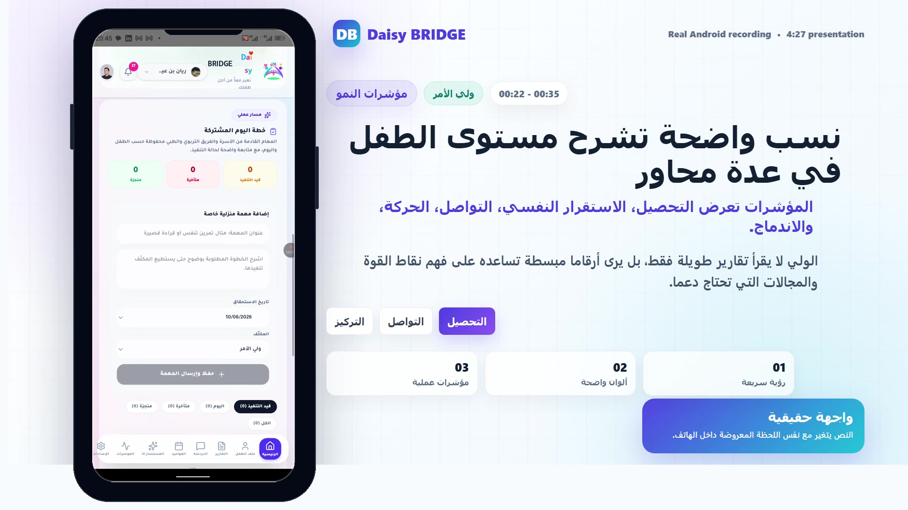
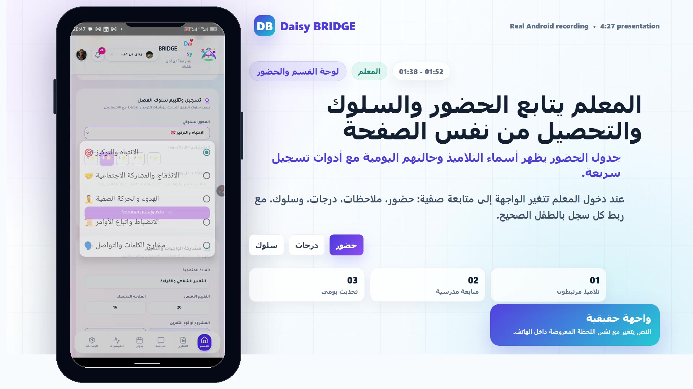
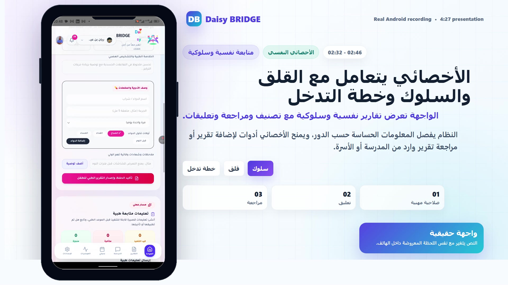

01
ملف موحد للطفل
مؤشرات صحية، سلوكية، نفسية وتعليمية في مكان واحد مع تحديثات يومية.
منصة متابعة الطفل بين الأسرة والمختصين
تطبيق يساعد الولي، المعلم، الطبيب، والأخصائي النفسي على متابعة الطفل من ملف واحد: تقارير، مواعيد، رسائل، مؤشرات يومية، وإشعارات منظمة.
نسخة الويب تعمل كعرض تجريبي داخل المتصفح. النسخة الكاملة للهاتف متوفرة من زر APK.

مؤشرات صحية، سلوكية، نفسية وتعليمية في مكان واحد مع تحديثات يومية.
محادثات وملاحظات بين الولي والمعلم والطبيب والأخصائي النفسي حسب الصلاحيات.
إنشاء تقارير مخصصة، إضافة تعليقات، وإرفاق ملفات لدعم المتابعة الواقعية.

كل مستخدم يرى الأدوات المناسبة له فقط: ولي، معلم، طبيب، أخصائي نفسي أو مدير.

البيانات التجريبية مضمنة داخل التطبيق حتى تظهر مباشرة بعد تثبيت APK أو فتح نسخة الويب.